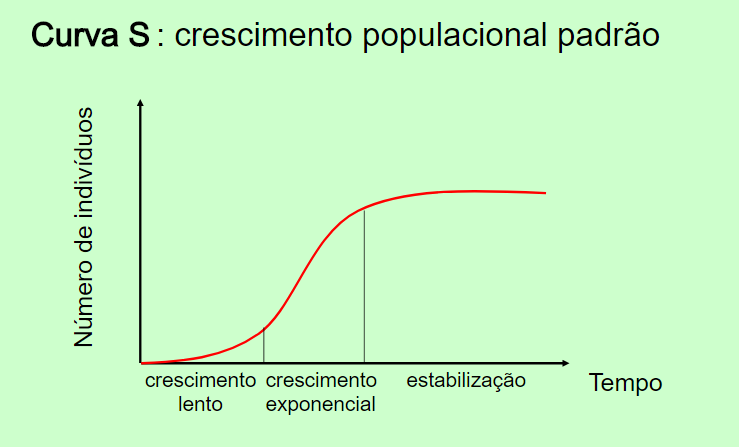
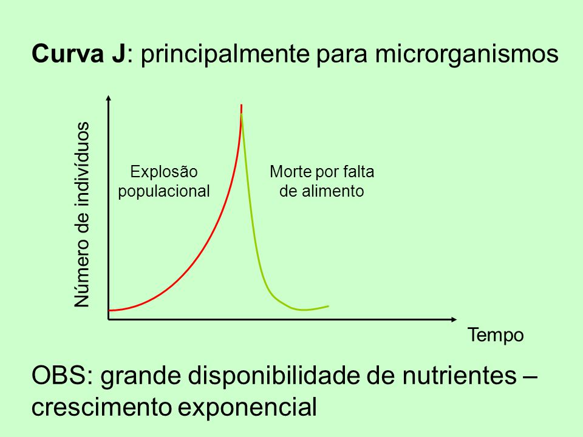

Nos ecossistemas em equilíbrio, o tamanho das populações mantém-se mais ou menos constante ao longo do tempo. As principais características de uma população são a densidade, potencial biótico, resistência ambiental e a estrutura etária.
A densidade corresponde ao número de indivíduos de uma população por unidade de área ou volume. Os principais fatores que influenciam na densidade das populações são: taxa de imigração (TI) e de natalidade (TN), que contribuem para o aumento da densidade; e taxa de emigração (TE) e de mortalidade (TM), que contribuem para a diminuição.
Densidade (D) = Número de indivíduos da população (N) / Unidade de área ou de volume (A)
Uma população em crescimento, apresenta natalidade e imigração maiores que mortalidade e emigração; uma em declínio, tem natalidade e imigração menores que mortalidade e emigração; e uma em equilíbrio, natalidade e imigração “iguais” a mortalidade e emigração.
| Taxa de crescimento (TC): TC = (TN + TI) – (TM + TE) |
O potencial biótico de uma população é a capacidade potencial que ela tem para aumentar, por reprodução, seu número de indivíduos, sem fatores que impeçam esse aumento (1 gera 2, que geram 4, que geram 8...). Já a resistência ambiental, ou resistência do meio, corresponde aos fatores da comunidade que se opõem ao potencial biótico. Assim, a regulação natural do número de indivíduos de uma população depende da combinação destes fatores.
A estrutura etária de uma população refere-se à proporção dos indivíduos das várias faixas etárias. Uma população em crescimento tem muitos indivíduos jovens, enquanto as estáveis, apresentam certo equilíbrio entre jovens e adultos.
Há dois padrões de crescimento populacional: Curva em S e Curva em J.
A curva em S ocorre em populações naturais, onde ela cresce-declina-cresce-declina, o que forma um ecossistema estável, com pouco variação do tamanho ao longo do tempo. Tem uma fase inicial de crescimento lento, a seguir, ocorre um rápido crescimento até chegar a fase de estabilização. Neste valor máximo, ocorrem pequenas oscilações.
A curva em J ocorre quando há uma intervenção humana. Um organismo é retirado da cadeia alimentar, ocorre uma explosão populacional do seu inimigo natural (predador), chegando ao limite de capacidade do ambiente. Após o crescimento explosivo, ocorre uma queda brusca no número de indivíduos pelo esgotamento dos recursos do meio, aumentando a taxa de mortalidade, podendo até extinguir a espécie. Também é característica de populações de algas.
Ecossistema é a combinação de uma parte biótica, viva representada pela comunidade, e uma parte abiótica, não viva, que inclui todos os fatores físicos e químicos do ambiente (luminosidade, umidade, solo e temperatura). A biosfera, parte do planeta que abriga a vida, é constituída de muitos ecossistemas, ela própria, em sua totalidade, é considerada como o maior ecossistema do mundo.
Os ecossistemas podem ser pequenos, como uma lagoa, ou muito grandes, como a Floresta Amazônica. Independentemente de seu tamanho, em todos eles ocorrem um intercâmbio de matéria e de energia. Além disso, cada ecossistema também troca matéria e energia com os ecossistemas vizinhos.